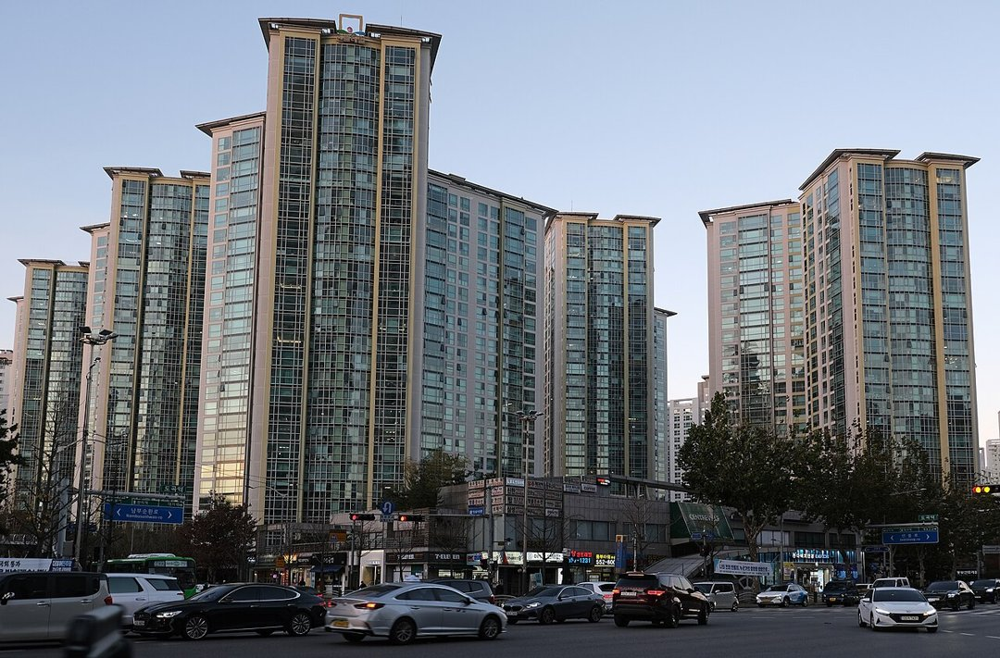

📷 사진 1 자리
▲ 재건축으로 새로 지은 강남 아파트 단지 · 사진: S h y numis / CC BY-SA 4.0 / 위키미디어 공용
재건축으로 오른 집값 일부를 나라가 거둬 가는 재건축초과이익환수제(재초환) 부담금이 서울 강남권에서 처음 부과될 예정이에요. 서초구 반포현대 조합원 한 명당 평균 2억 2천만 원대예요. 국토교통부는 19일 이 단지의 부과 기한을 12월 30일로 못 박았어요. 계산이 어떻게 되는지, 20년 가까이 왜 걷지 못했는지, 우리 단지는 어떤지까지 짚어 볼게요.
3줄 요약
부담금은 이렇게 계산해요
계산은 세 단계예요. 재건축이 끝난 시점 집값에서 사업을 시작할 때 집값을 빼요. 여기서 재건축을 안 했어도 올랐을 만큼(정상 상승분)과 공사비 같은 개발비용을 또 빼요. 이렇게 나온 초과이익을 조합원 수로 나눈 1인당 평균으로 부과율을 정해요.
2024년 3월 27일 시행된 개정법으로 면제선은 3천만 원에서 8천만 원으로, 구간 폭은 2천만 원에서 5천만 원으로 넓어졌어요. 계산 시작 시점도 추진위원회 승인일에서 조합설립인가일로 늦춰졌어요.
| 1인당 평균 초과이익 | 부과율 |
|---|---|
| 8천만 원 이하 | 면제 |
| 8천만~1억 3천만 원 | 10% |
| 1억 3천만~1억 8천만 원 | 20% |
| 1억 8천만~2억 3천만 원 | 30% |
| 2억 3천만~2억 8천만 원 | 40% |
| 2억 8천만 원 초과 | 50% |
예를 들어 1인당 평균 초과이익이 1억 5천만 원이면 500만 원(10% 구간)과 400만 원(20% 구간)을 더해 900만 원이에요. 걷은 돈의 절반은 주택도시기금으로, 나머지는 지자체 정비·주택 사업에 쓰여요.
2억 2천만 원은 이익이 얼마였다는 뜻일까
서초구는 11월 9일 반포현대 조합에 예정액 179억 원을 알렸어요. 조합원 80명이라 1인당 평균 2억 2천만 원대예요.
📷 사진 2 자리

▲ 서울 강남구 아파트 단지 · 사진: kallerna / CC BY-SA 4.0 / 위키미디어 공용
위 표대로 거꾸로 계산하면, 앞 구간들에서 쌓이는 금액이 5천만 원이에요. 나머지 1억 7천만 원을 50%로 나누면 2억 8천만 원 위로 3억 4천만 원이 더 있다는 뜻이에요. 1인당 평균 초과이익이 대략 6억 원 안팎이라는 계산이에요(단순 계산이고 실제 산정은 단지 자료에 따라 달라요).
이 금액은 예정액이에요. 서초구는 50일간 이의신청을 받은 뒤 최종 금액을 정해요. SBS Biz는 이의신청을 거치면 1억 원 초반대로 낮아질 수 있다는 업계 전망을 전했어요.
20년 가까이 걷지 못한 제도
재초환은 2006년 도입됐지만 부동산 경기가 꺾이며 2013~2017년 유예됐다가 2018년 다시 시행됐어요. 위헌 소송도 이어졌는데 헌법재판소는 2019년 12월 27일 합헌으로 결정했어요. 부담금이 공시가격 같은 객관적 절차로 산정되고 정상 상승분을 빼 주는 만큼 재산권을 지나치게 침해하지 않는다고 봤어요.
금액이 클 수 있다는 경고는 일찍부터 나왔어요. 2019년 1월 국토부 시뮬레이션에서 반포주공1단지 3주구는 가구당 부담금이 최대 8억 4천만 원까지 나올 수 있다는 결과가 나왔어요. 이런 숫자가 알려지면서 조합들은 사업 속도를 늦추거나 제도 개편을 기다렸어요.
그런데도 실제로 걷은 사례는 아직 없다는 게 최근 보도들의 공통된 설명이에요. 예정액을 통보받은 단지는 있었지만 사업 지연, 소송, 제도 개편 논의로 부과까지 가지 않았어요. 2024년 7월에는 국토부 장관이 제도 폐지에 기본적으로 동의한다는 뜻을 밝혔고 국회에서도 존폐를 포함한 개선 논의가 이어지고 있어요.
반포현대는 2021년 준공이라 법정 부과 기한이 올해 말이에요. 개정법 부칙으로 기간을 다시 세면 2029년까지 늘어난다는 해석이 나왔지만, 국토부는 19일 법 문구를 넘어선 해석이라며 받아들이지 않았어요.
우리 단지는 얼마나
한국경제가 보도한 권영진 의원실 자료에 따르면 서울에서 부담금이 예상되는 재건축 사업장은 53곳이에요. 1년 새 37곳에서 늘었어요.
| 서울 재건축 부담금 예상 | 숫자 |
|---|---|
| 대상 사업장 | 53곳 |
| 조합원 1인당 평균 | 1억 925만 원 |
| 최고액(용산 한강맨션) | 7억 2,210만 원 |
예정액 통지는 실제 납부 고지와 다른 행정 단계예요. 우리 단지가 대상인지, 언제 준공돼 기한이 언제인지는 조합 총회 자료나 구청에 확인할 수 있어요.
줄이거나 미루는 방법
자주 묻는 질문
Q. 재건축 부담금은 분양받은 일반 분양자도 내나요?
아니에요. 재건축 조합(조합원)에 매기는 부담금이에요.
Q. 이익이 8천만 원보다 적으면 안 내나요?
네. 조합원 1인당 평균 초과이익이 8천만 원 이하면 면제예요.
Q. 예정액이 나오면 바로 내야 하나요?
아니에요. 예정액 통지 뒤 이의신청을 거쳐 부과 금액이 정해지고 그다음 납부 고지가 나와요.
Q. 부담금은 어디서 매기고 어디에 물어보나요?
단지가 있는 시·군·구청이 예정액을 알리고 부과해요. 반포현대도 서초구가 통지했어요. 우리 단지 상황은 구청 재건축 담당 부서나 조합 사무실에 물어볼 수 있어요.
반포현대는 금액보다 '첫 실제 부과'라는 점이 더 무거워요. 20년 가까이 서류로만 존재하던 제도가 실제 청구서가 되는 순간이라, 이의신청 결과와 금액이 다른 53곳 조합의 사업 계획과 제도 존폐 논의에 기준점이 될 가능성이 커요.
반포현대 부담금은 12월 30일까지 부과돼야 해요. 다른 단지 조합원이라면 우리 단지 준공 시점과 예정액 통지 여부를 조합에 물어보세요.
함께 보면 좋은 이슈